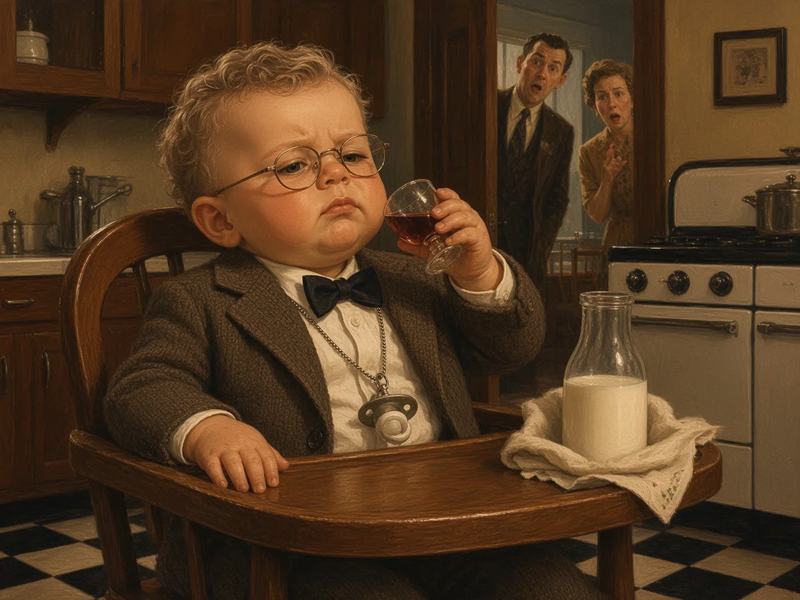
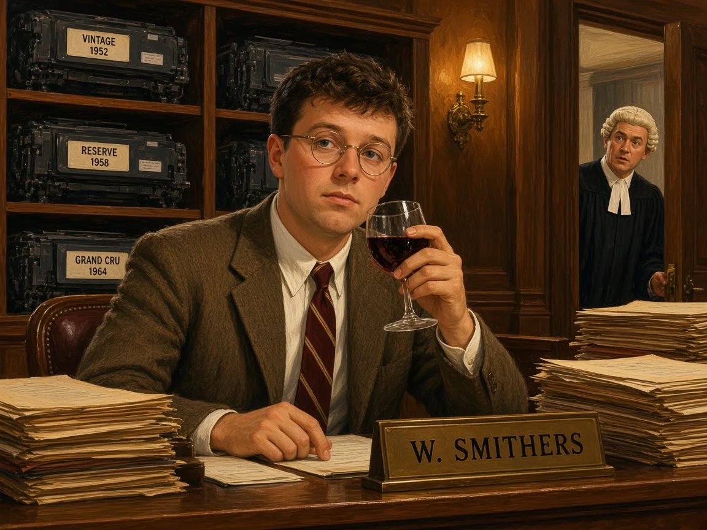
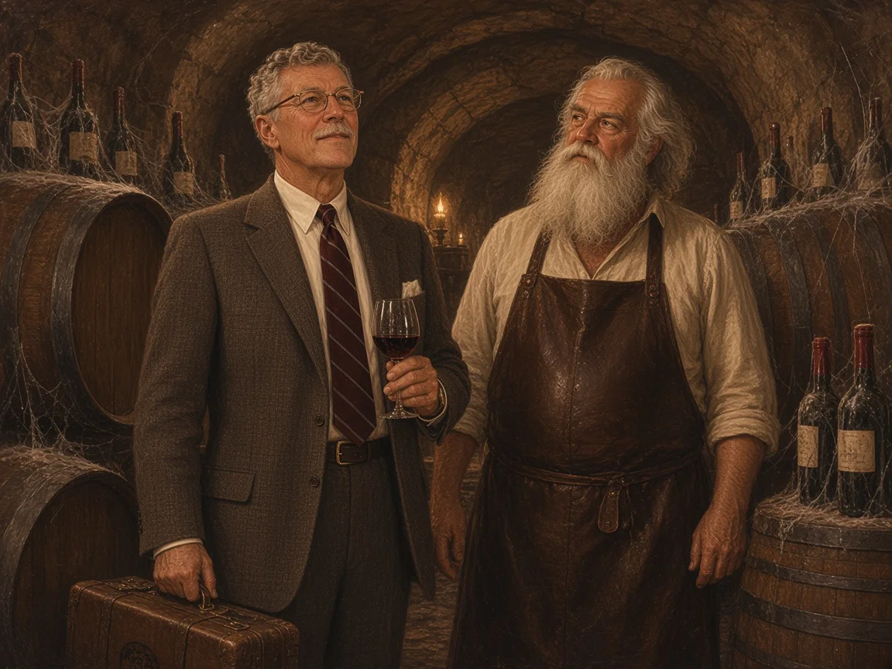
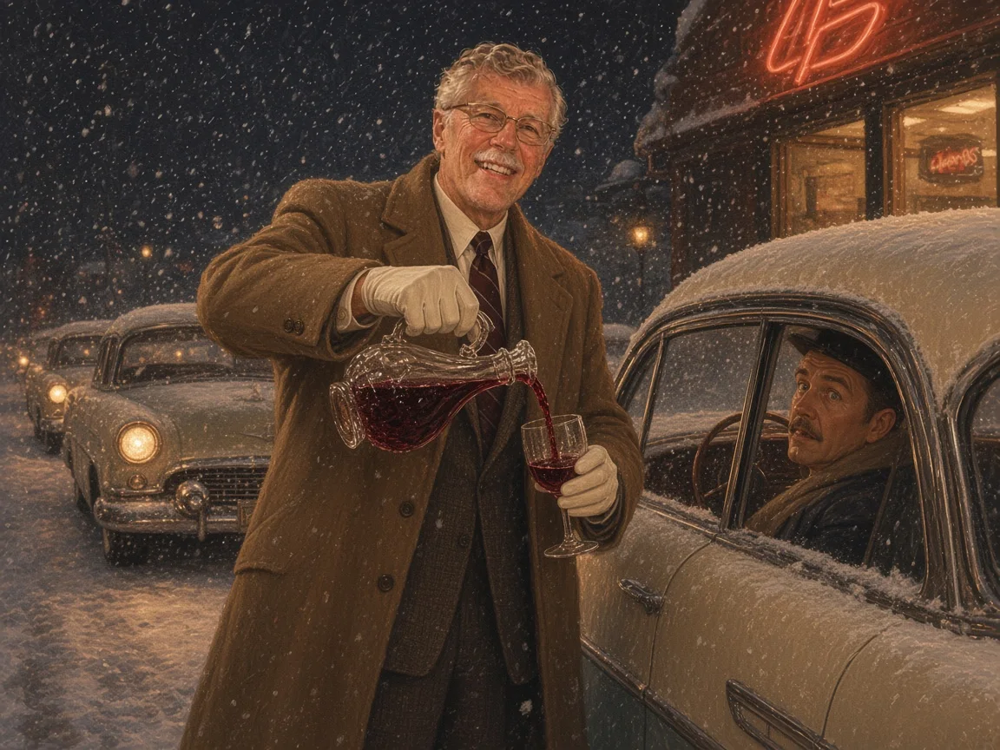
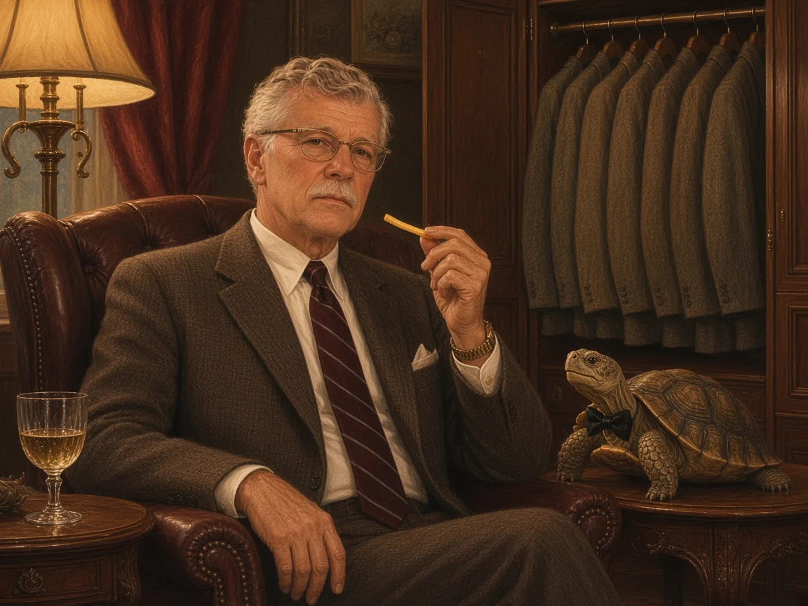

Des Moines

Wilhelm Smithers was born in Des Moines, Iowa, during a thunderstorm that his mother would later describe, without elaboration, as "well-structured." He was a quiet child. At four he refused a juice box on the grounds that it was "closed," and at seven he was asked to leave a church potluck after ranking the casseroles aloud, in order, with notes. Neighbours remember a boy who sniffed his milk for a long time before drinking it and who once described a Hy-Vee rotisserie chicken as "confident, but hiding something." No one in the family drank wine. No one has been able to explain where he got the vocabulary.
The Milton Years

At twenty-two, for reasons he has never discussed, Smithers moved to Ontario and took a position at the courthouse in Milton. He stayed for nineteen years. Colleagues recall a meticulous, courteous man who arrived at 7:40 every morning, organized the photocopier toner by vintage, and kept a single Bordeaux glass in his desk drawer that he never once filled. He is still credited with ending a three-day dispute over a fence line by tasting the soil from both properties and identifying, correctly, which side had once been an apple orchard. The judge thanked him and asked him not to do it again. During this period Smithers first encountered the work of Joel Friesen, in the form of a single handwritten pairing tucked inside a returned library book. He did not sleep that night. He handed in his resignation nineteen years later, which friends describe as "very fast, for Wilhelm."
The Turn

Smithers left Milton with one suitcase, the Bordeaux glass, and a list of every drive-thru between Mississauga and Lyon that he intended to visit, which included several that do not exist. He trained in Burgundy under a cellar master who refused to speak to him for the first fourteen months and on the fifteenth said only, "Fine." He completed the Court of Master Sommeliers examination in an afternoon and has reportedly never collected the pin, explaining that he "already knew." He has since been barred from two Michelin-starred restaurants in Paris for sending back the water.
Renown

Today Smithers is regarded, mostly by himself and a small but intense group of admirers, as one of the most important palates of his generation. He has decanted a Pinot Noir for the full duration of a Tim Hortons drive-thru line during a snowstorm and called it "the correct amount of time." He once paired a single chicken nugget with a 1961 Château Latour and wept, briefly, but declined to say which of the two had moved him. He has been offered the position of head sommelier at four of the world's great restaurants and has turned all of them down, citing "the menu." He still visits the Milton courthouse every spring. He sits in the gallery, observes a morning session, and leaves without speaking. Staff say the coffee tastes different for a week afterward.
Personal Life

Smithers lives alone with a tortoise named Cabernet, who is older than he is and whom he describes as "his only honest critic." He does not own a television. He owns eleven identical tweed jackets. He has never eaten a french fry without first holding it to the light. When an interviewer asked what he would want for his final meal, he paused for a long time and said, "A Filet-O-Fish, and a Muscadet, and no questions." The interview ended there.
Recovered Photographs
The following photographs have surfaced over the decades in estate sales, classified archives, a Cairo flea market and, on one occasion, the glovebox of a 1987 Buick. The Smithers estate neither confirms nor denies their authenticity. Mr. Smithers, when shown them, said only: "That was a good year," regardless of which one.
The Group Plates
Two composite plates, discovered pressed between the pages of the Oxford English Dictionary (Volume XIV, "Pottery" to "Quixotic"). The estate has been unable to determine who assembled them, or why Mr. Smithers appears to age in no particular order.